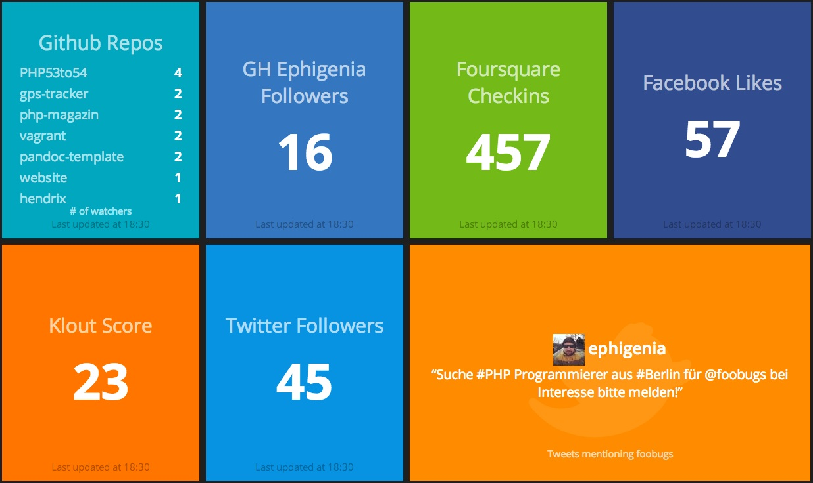

In the last year and a half, I set up a Ruby based Dashing dashboard for my team and others in our product area. Here’s what a sample Dashing dashboard looks like:

It’s been a huge success, but it was tough to gain traction along the way. Here I’ll summarise what I’ve learned (in no particular order):
- Don’t do dashboards for managers, do them for teams
- Use big text, have the minimum information as required
- Use colours (preferably like the traffic light system) to focus attention
- Link in all critical systems to daily work
- Make it a one stop shop and faster then all other methods of getting this information
- Reuse the work of others (steal with pride)
- Don’t bother with graphs
Below I outline the reasons for each point:
Don’t do them for managers
Teams want statistics to help them do their job better, not as a metric to be hit with like a stick. You have to assure the team the goal is to help them do their jobs better and to focus on the important things. Metrics don’t explain nuances, so the team lead/scrum master needs to take this and let the team get back to whats important - development.
Use BIG text
With Dashing, it’s very easy to create widgets from scratch and pack a lot of information in. You have to fight this urge, use trial and error and see what the teams respond to. Constant tweaking is the name of the game and listen to the suggestions of others. While you can’t and shouldn’t listen to everyone, try see if their idea could work in a slightly altered form.
Use Colours
The best colours are the traffic light system. People don’t need to be techinical to know, green=good, orange=warning, red=danger. It also helps focus on what I should be looking at. Red is most critical, so my attention should on that first and so on. Use the limits sparingly at first (ie. don’t have everything red or orange, or no one will pay attention) and tweak as you go.
Link in all critical systems
Everything I need to know should be on the dashboard, and that means for us a lot of disparate systems. Luckily a lot of products have an API these days and it’s very easy to link Dashing to any system, thanks to the flexibility of Ruby. We have linked:
- Jenkins: for status of all our release jobs, server status etc
- Gerrit: for number of code reviews, so make sure to keep on top of them
- A custom maintrack solution, so we know the latest version of software and whether we can deliver
- Jira, for the number of bugs
- Last tested version of our software on the main track
Make it a one stop shop
People will use tools that make their lives easier. The trouble is, when you start, that won’t be evident. You’ve got to keep on top of what people like and respond to. People often have ideas/tweaks after I’ve added something new, as they see what can be done. You should distill down to exactly what your team needs, no more, no less. This pure trial and error and you have to be ruthless in cutting things that don’t work. Space is valuable, your teams attention is valuable, so don’t waste either.
Steal with pride
The “Additional Widgets” wiki page for dashing has lots and lots of premade widgets, use them! Often I have to make tweaks, but the majority of the hard work is done. You can browse widgets by service (like Jira or Confluence, there’s a few for each), or browse the list in general and see if a widget with a totally different purpose (say bus times) could be repurposed in to a list of the last commits by time, etc!
Don’t bother with graphs
Management love graphs, but development teams don’t. Burndowns for example, are a step above where your focus should be. You need to have servers ready, bugs in check, maintrack to be open for deliveries, all before you have a hope of burning down. This will different for every team, but I’d steer clear of graphs, comics, funny pictures etc, they are not conducive to work and are very hard to read from a distance.